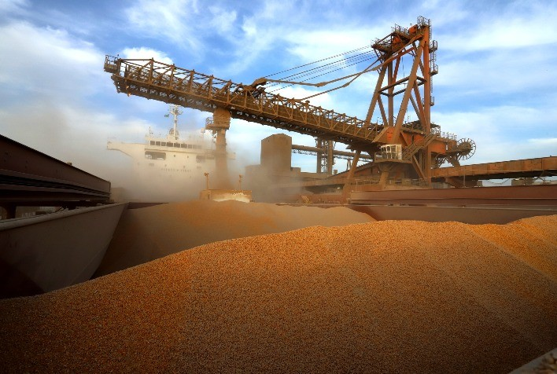

exportações de produtos do campo
As exportações de produtos agrícolas do Paraná são destaque no cenário nacional, com a soja, carne de frango e produtos florestais liderando as vendas para o exterior.
A China é o principal destino dos produtos paranaenses, seguida pela Argentina e Estados Unidos.
